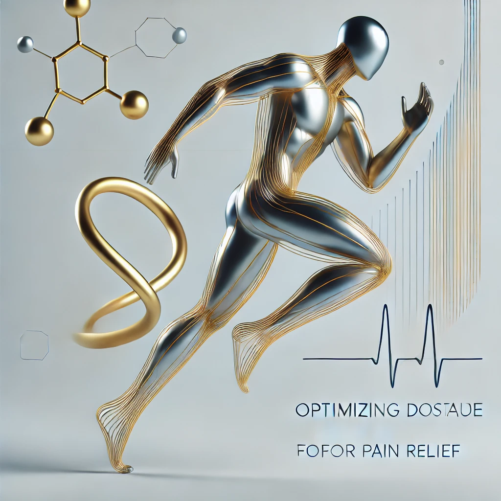

Mobile, evidence-based training for seniors and post-therapy graduates in Battle Ground, WA. Minimal equipment. Maximal science. All in the comfort of your home or community.
Experience the convenience of personalized in-home or on-site training. Olympian Health Solutions brings a compact, medical-informed micro-gym to your driveway, living room, or senior community.

We talk through your goals, history, and daily life demands.
Your program is tailored to your body, pain, and energy levels.
We meet where you are — literally — to train safely and consistently.
We adjust the plan based on your week, symptoms, and progress.
Olympian Health Solutions is designed especially for older adults, post-physical-therapy graduates, and senior living communities in and around Battle Ground, Washington. If you want to move with less pain, more confidence, and a clear, science-based plan, you are in the right place.
For seniors who still live at home but feel their balance, stamina, or strength slipping. We use simple, portable tools and “minimum effective dose” training to help you keep doing the things you love.
You’ve been discharged from PT but don’t feel “done.” We bridge the gap from rehab to real-life strength and fitness with nervous-system-friendly progressions — without claiming to be physical therapy.
Activity directors and administrators who want real fall-prevention, improved mobility, and happier residents through on-site classes, seminars, and optional 1:1 sessions.
For people managing arthritis, diabetes, heart disease, or long-term pain who have been told to “just move more” but need a plan that feels realistic, safe, and grounded in current research.
At Olympian Health Solutions, our evidence-based exercise philosophy combines minimal effective dose, pain science, and nervous-system-aware coaching to help seniors and post-PT clients thrive.
Custom exercise programs with a compact micro-gym from the back of a truck — no crowded gym required.
Classes, seminars, and 1:1 sessions for assisted and independent living communities.
Safe, progressive training to carry you from rehab discharge to full participation in life again.
Seniors and post-PT clients who commit to appropriate, consistent exercise often see meaningful changes in strength, balance, and confidence over just a few months.
Report less daily pain with tailored strength and movement.
Feel more confident walking in their home and community.
Notice better energy for everyday tasks.
Our pioneering research explores how minimal, targeted exercise can deliver substantial benefits for pain, function, and overall health.

Exploring how small, well-designed exercise doses can reduce pain and improve function without overwhelming the body.
Read Full Article
Understanding how the brain and nervous system respond to graded movement, and why “hurt” doesn’t always equal “harm.”
Read Full Article
How strategically designed, time-efficient exercise plans can improve mobility, pain, and quality of life in older adults.
Read Full ArticleMajor health organizations like the Centers for Disease Control and Prevention (CDC), the World Health Organization (WHO), and the U.S. Physical Activity Guidelines Advisory Committee agree: appropriate movement is one of the most powerful tools we have to improve health, mood, and independence — especially as we age.
Regular movement can lower your risk of heart disease and stroke by roughly 20–30% compared with being inactive. It helps improve blood pressure and cholesterol so your heart does the same work with less strain.
Evidence snapshot: Large guideline reviews show that even moderate activity (like brisk walking) several days per week reduces cardiovascular risk in older adults.
Your muscles act like a “glucose sponge” when they contract. Strength and aerobic training together improve how your body handles sugar and can help lower A1c in people with type 2 diabetes.
Evidence snapshot: Diabetes guidelines worldwide recommend exercise as a core part of managing blood sugar and reducing complications.
Movement boosts brain-supporting chemicals like BDNF, improves blood flow to the brain, and is linked with lower risk of cognitive decline and dementia.
Evidence snapshot: Studies in older adults show that regular physical activity supports memory, thinking speed, and executive function, and can reduce symptoms of depression and anxiety in many people.
Gentle, progressive strength training often reduces joint pain and improves function for people with knee, hip, and spine arthritis. For chronic pain, gradual movement helps an overprotective nervous system feel safer.
Evidence snapshot: Many arthritis and chronic pain guidelines list exercise as a first-line treatment, not an afterthought.
Targeted balance and strength training can reduce fall risk by around 20–30% in older adults and helps you stay steadier on your feet.
Evidence snapshot: Fall-prevention programs that combine strength, balance, and mobility are strongly supported in older adult research.
People who move regularly tend to live longer and spend more of those years able to do the things they care about. Even doing “some” activity is much better than doing none.
Evidence snapshot: Large population studies show that going from “inactive” to “a little active” cuts the risk of early death, with benefits increasing as activity builds.
Good news: You don’t have to do everything at once. Olympian Health Solutions focuses on minimal, targeted exercise prescriptions that meet you where you are and build from there.
“I never imagined that a few simple exercises in my living room could make stairs feel this easy again.”
“After PT ended I felt stuck. These sessions gave me a bridge back to the life I actually want.”
“Our residents look forward to the classes every week. We’ve seen fewer falls and more smiles.”
No. Olympian Health Solutions provides exercise coaching and movement training — not medical rehabilitation. We do not diagnose, bill insurance, or replace your healthcare providers. Instead, we complement their work by helping you apply evidence-based exercise to your daily life.
Yes. The entire model is designed around complex realities: arthritis, heart disease, diabetes, chronic pain, and more. We use a “minimum effective dose” approach so progress feels safe and sustainable.
Yes. We partner with senior and assisted living communities to offer group classes, educational seminars, and optional 1:1 sessions on site.
You can start by taking the Exercise Quiz, or by booking a free consultation through the contact section below.
Ready to explore how movement could help you or your community? Reach out below.
Location: Battle Ground, Washington and surrounding areas
Email: info@olympianhealthsolutions.com
Phone: (123) 456-7890
Service type: Mobile, in-home, and senior living community training
Start with the Exercise Quiz